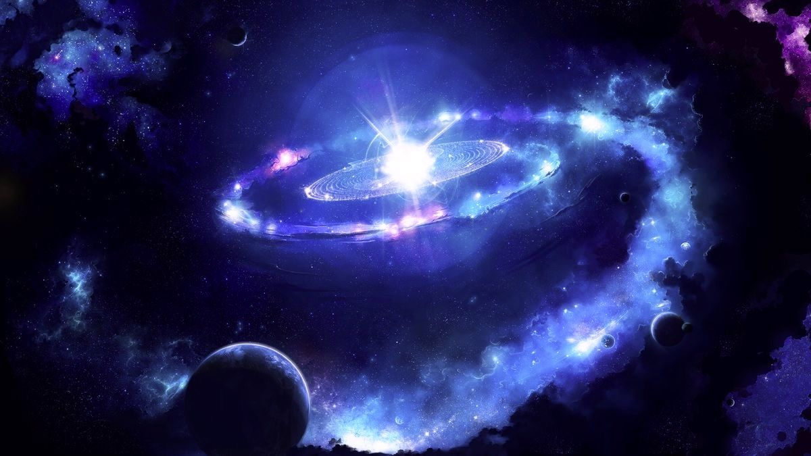
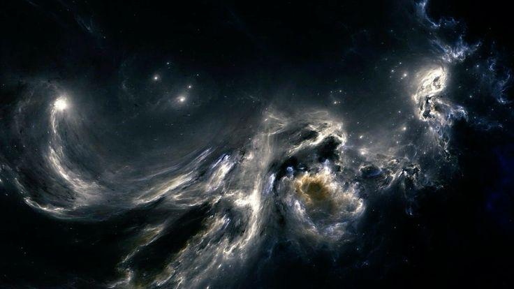
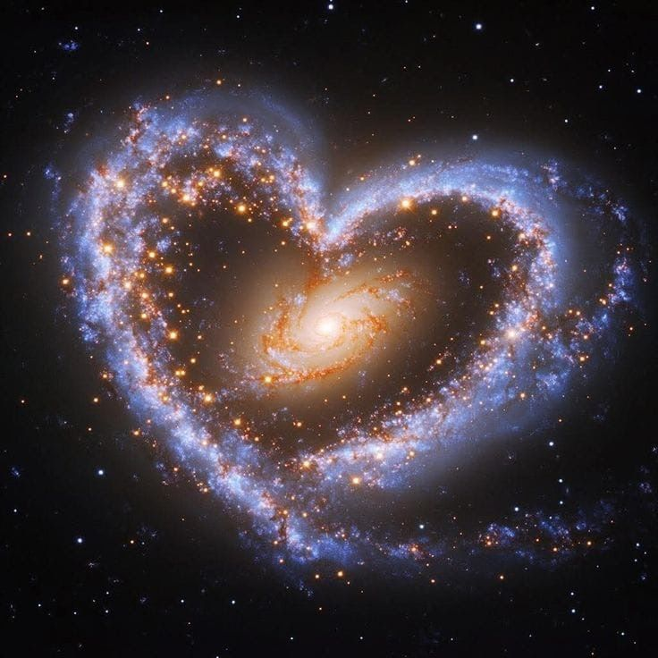

Според съвременната наука Вселената е започнала своето развитие преди около 13,8 милиарда години. Това, което наричаме Голям взрив, не е експлозия в празното пространство, а начало на самото пространство и време. В първите мигове след това начало Вселената е била изключително гореща, плътна и изпълнена с енергия. Постепенно тя се е разширявала, охлаждала и от този първичен космически хаос са започнали да се оформят първите частици, атоми, звезди и галактики.  Най-впечатляващото е, че Вселената е непрекъснат процес. Звездите се раждат в облаци от газ и прах, живеят милиони или милиарди години и накрая завършват живота си по различни начини – тихо угасват или избухват в грандиозни свръхнови. От остатъците на тези звезди се раждат нови светове. Това означава, че материята около нас – въздухът, водата, дори самите ние – е съставена от частици, създадени в сърцата на древни звезди. В известен смисъл човекът е частица от Космоса, която е започнала да осъзнава собствения си произход.Още по-удивително е, че когато гледаме към далечните звезди, ние всъщност гледаме назад във времето. Светлината се движи с крайна скорост, затова лъчът, който достига до нас от далечна галактика, е тръгнал към Земята преди милиони или дори милиарди години. Да наблюдаваш Вселената означава да четеш нейната история. И въпреки огромния напредък на науката, голяма част от Вселената остава неразгадана. Наблюдаемата материя – звездите, планетите, мъглявините – е само малка част от цялото. Астрономите смятат, че по-голямата част се състои от тъмна материя и тъмна енергия – невидими явления, които не можем да видим пряко, но усещаме чрез влиянието им върху движението на галактиките и разширяването на Космоса. |